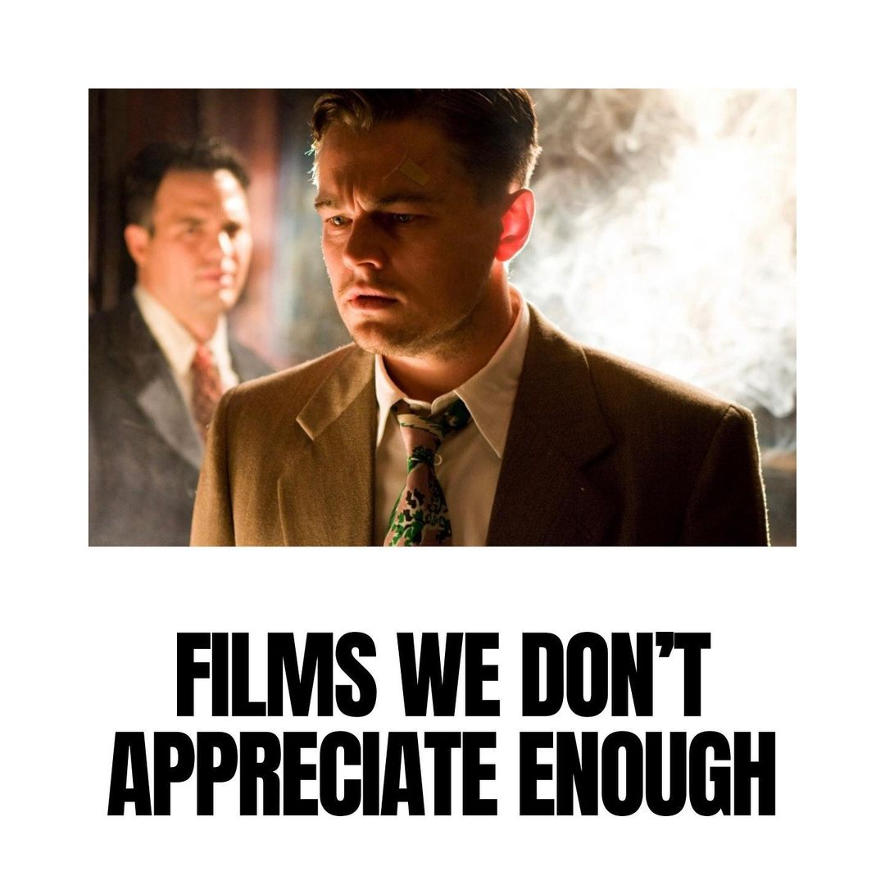

Today's top lists


For those that are unfamiliar, One Night in Miami is Regina King’s directorial debut about a fictional conversation that took place on a real night between Cassius Clay, Jim Brown, Sam Cooke, and Malcom X regarding their roles in the Civil Rights Movement. The best thing this film has going for it is its incredible performances. Everyone does such an amazing job at capturing the true spirit and energy of those that they’re portraying — and an even a better job at building off of one another to create a magnetic synergy that carries the film through. I do think there are smarter ways to portray the dilemma of approaching the civil rights movement with clashing ideologies in a cinematic fashion beyond just showcasing a literal conversation for the entire film. However, as far as conversations go, this one was pretty damn entertaining — and beautifully performed. I look forward to what Regina King does next.
In the movie "Pulp Fiction" John Travolta pulls the needle out of Uma Thurman’s chest after she overdoses. The actual shot was filmed in reverse, which made it seem as if the needle made contact with Thurman’s skin. This made the shot much safer since it reduced the risk of Travolta puncturing his co-star.
One of Robert De Niro’s notable performances is as Max Cady in Cape Fear (1991). To play the role as authentically as possible, Robert De Niro paid his dentist $5,000 to make his teeth appear as bad as he possibly could. Once the movie was complete, he paid another $20,000 to have his teeth restored.
Hardy and “Fury Road” director George Miller had a tumultuous relationship on set because of what Hardy saw as a “relentless barrage of complexities” for a “fairly linear story.” But after he saw the film, Hardy said, “I knew he [Miller] was brilliant, but I didn’t know how brilliant until I saw it. So my first reaction was ‘Oh my god, I owe George and apology for being so myopic.’”
While Wesley Snipes was making Blade: Trinity, he became angry when he saw a black actor in the film walking around wearing a shirt that said “Garbage.” Not knowing that it was the actor’s own shirt, Snipes confronted director David Goyer and called him a racist, even trying to strangle him!
Dwayne Johnson accidentally knocked out co-star Michael Clarke Duncan while filming of The Scorpion King (2002). Duncan and Dwayne were filming a fight scene and Duncan leaned in a bit too far, and The Rock’s elbow connected right on his chin. Duncan apparently went down like a sack of bricks and was completely out.
"Movies you might like" is a non-profital website that creates daily lists about movies, shows and give our honest opinions and ratings so you as a viewer can easly find a movie or a show that you want to watch and all of that spoiler free. Also we provide daily facts about movies, actors and film industry. We also provide scenes from movies as highlights that we thought were unique in there own way. Happy Watching! :)